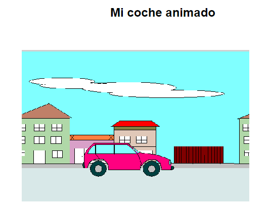

Enunciado
A continuación, deberá crear una página web que muestre un coche en movimiento. Para ello, deberá utilizar las dos imágenes .gif proporcionadas.
- Cree la estructura del documento HTML.
- Cree el script con las funciones y los eventos pertinentes para dar funcionalidad a las imágenes.
- Incluya el siguiente código CSS para completar el ejercicio correctamente:
<style type="text/css">
* { margin: 0px auto; padding: 0px; }
h1 { font:bold 1.5em arial; text-align: center; padding: 0.5em ; }
#visor { position: absolute; top: 100px; left: 200px; width: 450px;
height: 300px; overflow: hidden; }
#fondouno { position: absolute; top: 0px; left: 0px; }
#fondodos { position: absolute; top: 0px; left: 450px; }
#micoche { position: absolute; top: 180px; left: 120px; }
</style>Pista: Deberá insertar dos imágenes consecutivas del fondo en el código HTML.

Deberá quedar como la siguiente imagen:
Finalmente, compruebe la funcionalidad de la web
Actividad asociada al CE3.5
CE3.5 Integrar scripts ya desarrollados en una página web, para añadir funcionalidades específicas de acuerdo a las especificaciones recibidas:
- Descargar el componente ya desarrollado.
- Utilizar una herramienta de edición de script.
- Modificar las propiedades y los atributos de los objetos que componen el script para ajustarlo a las especificaciones recibidas.
- Comprobar la disponibilidad de utilización del script teniendo en cuenta los derechos de autor y la legislación vigente.
- Integrar el script a la página web previamente indicada.
- Probar la funcionalidad de la página resultante utilizando un navegador.
- Corregir los errores detectados.
- Documentar los procesos realizados.
Solución
Actividad asociada al CE3.5
No ha hecho falta descargar ningún script ya que este tipo de animaciónes se hacen más rápido y son más eficientes con CSS.
Además no se especifica ningún sitio para buscar el script
Si se quisiera hacer con un script habría que modificar la propiedad "left" de los fondos al igual que se hace con las animaciones.